Apaixonado por programação, por sempre evoluír e colaborar! ♡

Felipe Pinto Da Silva
🎯 Habilidades e Tecnologias
Desenvolvedor Frontend e Backend totalmente focado em Javascript e C#, mais centrado em Asp.net MVC:
Javascript

Typescript

Node.js
React
Git
C-Sharp
SQL Server
Sobre Mim
Meu nome é Felipe Pinto da Silva, nasci em 23/02/2004 e iniciei nos estudos de programação em 2020, estou constantemente aprendendo e me apaixonando cada vez mais por desenvolver e poder facilitar muitos processos programando, além de poder colaborar.
Atualmente estou como estagiário na Tecnologia Única, participando de projetos e praticando constantemente.
Competências
Veja aqui quais são todas as competências pela BNCC.
Aprendizagem constante • Empatia e Cooperação • Autogestão • Cultura digital
Muitos trabalhos e projetos feitos em equipe durante o aprendizado na ETEC MCM.
Formação
ETEC MCM - Informática Para Internet (01/02/2019 - 01/12/2021).
Áreas de Conhecimento
Conhecimentos Técnicos: Desenvolvimento e estruturação de software (Programação Para Web) • Design • Modelagem de banco de dados • Redes • Gestão de sistemas operacionais • Marketing • Empreendedorismo.
Objetivo
Crescer profissionalmente nessa área entrando no mercado de trabalho sem me comprometer, ou até mesmo conseguir empreender e colaborar com a sociedade.
📂 Projetos
Tenho alguns projetos que são publicados no Github (e alguns estão em outras plataformas) feitos para praticar, atender alguns requisitos escolares (projetos da escola) e para colaborar com outros programadores.
Abaixo deixo alguns projetos. Ver Outros

Proffy A plataforma tem como objetivo inscrever professores para ministrar aulas aos alunos de acordo com o que eles procuram

NPS API de Cálculo de NPS (Net Promoter Score - Pontuação Líquida do Promotor, avaliações de algo) de um usuário registrado

Snake Game Clássico jogo da cobrinha feito em Javascript, sendo possível alterar o modo, dificuldade e estilo do jogo

Otakinhos Store Um sistema de Nota Fiscal da loja geekie "Otakinho"

Node.js Pequenos projetos para praticar Node.js e para pessoas pegarem ideias para praticar e aprender também
📚 Aprendizado
Desde que comecei a estudar programação, fui observando relatos de experiências próprias de muitos profissionais (em relação a programação) pela internet e alguns pessoalmente, assim consegui ter base para recorrer a alguns pontos muito importantes.
Código Limpo e Refatoração
Podemos identificar um bom trabalho analisando o código do Software / Sistema, vendo se ele está limpo e se fizeram questão de refatorar para deixar um código bom, fácil de entender e de realizar manutenção. Então se o código não está "poluído" e tá fácil de entender, então isso indica que a pessoa conseguiu expressar bem uma ideia.
É necessário evitar o que muitas pessoas fazem em relação a este assunto, pois há muita gente que desenvolve um código dificil para o entendimento dos outros e, mostra que apenas ela consegue entender, achando ser muito inteligente por causa disso, o que claramente é um ponto muito negativo. Deve-se tomar atitudes controvérsias a estas, pois elas podem resultar em problemas a longo prazo, onde estará comprometendo muitas coisas. Então o tempo investido para produzir um bom código é muito benéfico.
Com o Livro Clean Code e Refactoring é possível entender muito mais sobre o assunto.
Trabalho em Equipe
Fazer um trabalho que busque sempre facilitar outros processos que a equipe acompanhará é essencial para gerar bons resultados, isso funciona conforme o modo que a equipe trabalha.
Foco
O significado de foco aqui está relacionado aos objetivos de aprendizagem do desenvolvedor, ou seja, não generalizar o que vai aprender é essêncial para tornar resultados bons e de qualidades. O termo "não generalizar o que vai aprender" significa não estar procurando aprender diversas coisas ao mesmo tempo, como diversas tecnologias diferentes umas das outras, pois assim fica muito mais dificil de manter um foco e de conseguir estar se especializando para produzir com qualidade.
Produtividade
Manter uma rotina organizada e estruturada para aprender é essencial para se manter produtivo utilizando o tempo ao seu favor.
Em relação a usar o tempo ao favor, temos como questão do Tempo x Qualidade, onde sempre é importante investir tempo para alcançar qualidade (para atribuir boas dicas de outras pessoas também), e não apenas sair produzindo de forma como um "mal desenvolvedor", como é falado abaixo.
Bom Desenvolvedor
Um bom desenvolvedor normalmente evita atitudes na qual claramente não são benéficas para ninguém. A seguir tem alguns exemplos de boas atitudes de muitos profissionais experientes:
• Facilitar o entendimento aos outros
• Trabalhar em equipe
• Investir tempo para aprender
• Não depender de "sorte" para algum desenvolvimento dar certo
• Não ficar culpando algo por algum erro
• Aprender com erros